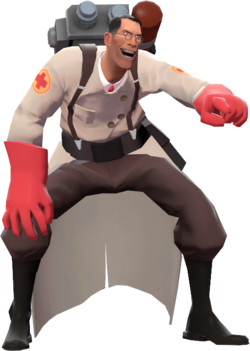

Arsenal

Pistola de Seringas

Arma Médica

Serra de Ossos

O Medic é um homem teutônico da medicina de Stuttgart , Alemanha . Embora ele possa ter uma adesão tênue à ética médica, ele é, no entanto, a principal classe de cura da equipe . Embora a Arma de Seringa e a Serra de Ossos do Medic não sejam as armas mais excelentes para combate direto, ele ainda pode ser encontrado perto das linhas de frente, curando companheiros de equipe feridos enquanto tenta ficar fora do fogo inimigo.
Quando o Medic foca sua Medi Gun em um companheiro de equipe, eles gradualmente recuperam pontos de saúde . Companheiros de equipe que já estão com saúde total têm sua saúde aumentada além do limite padrão, chegando a 150% de sua capacidade básica de saúde (com exceção de armas que têm penalidades de sobrecura, como os Punhos de Aço e o Quick-Fix ). Companheiros de equipe que não sofreram danos recentemente são curados mais rapidamente, incentivando outros jogadores a se retirarem quando feridos.
Ao curar, o Medic preenche gradualmente uma barra de ÜberCarga única , que pode ser preenchida mais rapidamente se curar companheiros de equipe feridos ou não totalmente curados. Quando a barra de ÜberCarga está totalmente carregada, a Arma Médica do Medic começa a crepitar, acompanhada por pequenas partículas elétricas da cor do Time em sua ponta, indicando que agora ele pode lançar uma carga única para beneficiar seu alvo de cura (e a si mesmo) por oito segundos. Uma carga da Medi Gun oferece invulnerabilidade temporária; uma carga da Kritzkrieg concede acertos críticos garantidos ; o Quick-Fix concede cura rápida, juntamente com imunidade a golpes de repulsão e rajadas de compressãode Pyros ; e o Vacinador concede resistência aprimorada a um tipo de dano específico ( balas , explosivos e fogo ).
Embora o Medic não possa se curar com sua Arma Médica (a menos que usando um Quick-Fix implantado com ÜberCarga ou a provocação Oktoberfest do Kritzkrieg ), ele é capaz de regenerar saúde lentamente ao longo do tempo, e é a única classe capaz de fazer isso naturalmente. Quanto mais tempo um Medic ficar fora de combate e evitar danos, maiores serão os incrementos de saúde que ele cura passivamente. Um Medic ferido começa a regenerar saúde a uma taxa de 3 pontos de saúde por segundo, aumentando nos dez segundos seguintes até um máximo de 6 pontos de vida por segundo (essa taxa básica pode ser afetada positivamente pelo Amputator e negativamente afetada pelo Blutsauger ) . Curar companheiros de equipe feridos dobrará a taxa atual de regeneração de saúde.
O Medic é dublado por Robin Atkin Downes .